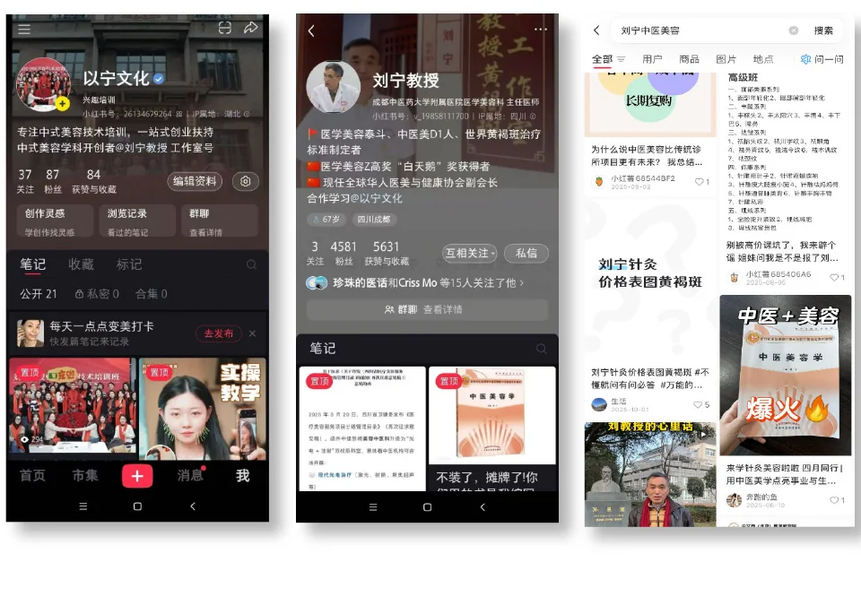

04 / 中医教育
围绕小红书获客与课程转化推进内容运营。
01 / 怎么做
围绕课程招生，把触达、信任、咨询和成交拆给不同类型的账号与内容协同完成。
02 / 我的工作
参与账号起号与内容定位，让账号尽快进入稳定内容生产。
围绕课程价值、专业信任与用户问题持续组织内容。
让不同账号分别承担触达、信任与咨询任务，形成内容协同。
03 / 项目结果
课程首开阶段营收约 15 万元。
04 / 代表内容
